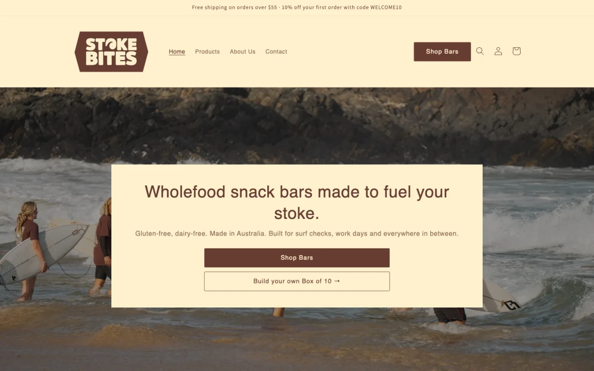
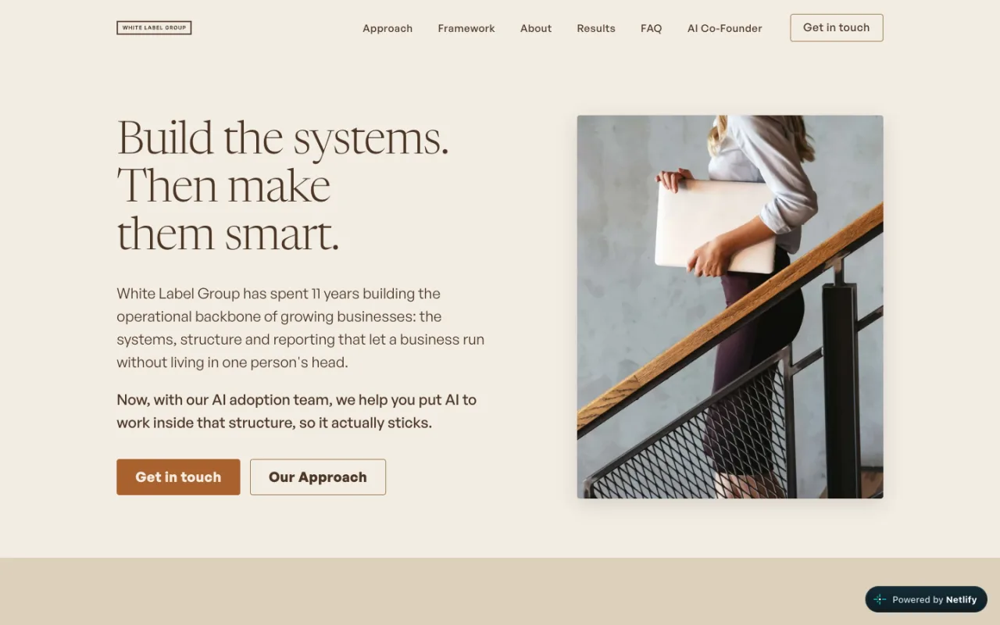
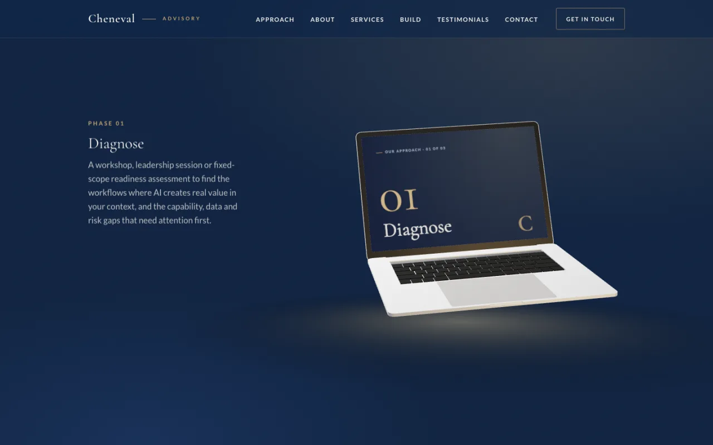

AI Adoption and Automation
Build it. Then make it stick.
Cheneval Advisory is a forward deployed AI practice. We work inside your organisation to build the automations, agents and tools your team actually needs, then train the people who own them so the change lasts after we leave. Less "we should do AI", more "here's what runs on its own now."
Our Approach
From AI uncertainty to things that run.
AI adoption fails in two places: nobody builds the thing, or nobody uses the thing that got built. We cover both. Three phases, run inside your business rather than from a slide deck.
-
Diagnose
A workshop, leadership session or fixed-scope readiness assessment to find the workflows where AI creates real value in your context, and the capability, data and risk gaps that need attention first.
-
Build
We design and build the highest-leverage use cases with your team: workflow automations, AI agents, integrations and tools, using the systems you already have wherever possible. Tested and working before anyone is asked to change how they work.
-
Embed
Training, governance and operating rhythms so the people who own the work can run and extend what was built. Capability stays with you, not with us.
About
Practitioner-led, not slide-deck-led.
Jami Emerson Cheneval is the principal of Cheneval Advisory, a Sydney-based consultancy helping organisations adopt AI in practical, sustainable ways. She works at the University of Technology Sydney as an AI Capability and Adoption Specialist and Test Automation Engineer, and founded an Australian wholefood snack bar brand that runs on integrated AI workflows.
Through Cheneval Advisory, Jami works as a forward deployed practitioner: she builds the automations and tools, trains the people who own them, and stays until it works. She brings four years of automation engineering experience and deep technical expertise across test automation, workflow automation, web development and enterprise AI adoption, including leading a 34-person team to AI-first ways of working within a year.
Services
Five ways we work with you.
-
Executive Workshops
In-house sessions for leadership teams, executive groups, boards, and People & Culture functions — on AI literacy, governance, adoption strategy, and change management. Half-day or full-day.
-
Operational Workshops
Hands-on sessions that help operational and frontline staff adopt AI in their everyday work — turning the right tools into practical, repeatable workflows for the tasks they already own.
-
Forward Deployed Engagement
Embedded, fixed-term build work inside your team. We map the workflows, build the automations and agents, integrate them with your systems, and hand over working tools with the people trained to run them. Typically two to twelve weeks.
-
Adoption Partner Retainer
Ongoing monthly advisory after a diagnostic — leadership sessions, async support, roadmap reviews, governance check-ins, and change-management coaching as you execute.
-
Advisory Hours
Pre-purchased advisory hours for organisations that need on-demand AI guidance without a full engagement — document reviews, board prep, vendor evaluation, second opinions.
Build
We don't just advise. We ship.
Most AI advisors hand you a strategy and leave. We build the automations, workflows and tools your team will actually use, test them properly, and train the people who own them. Here's what that looks like.

Stoke Bites
Shopify store, designed, built and run end to end, with automated orders, inventory and finance flows.
Workflow automation
Receipts, invoices, approvals, reporting, CRM updates, inbox triage, document generation. The repetitive admin that eats a role's week, built to run on its own.
n8n · Power Automate · Zapier · Copilot Studio
AI agents and integrations
Agents that read, draft, classify and act inside the tools you already pay for, connected through APIs so data moves without a person re-keying it.
Claude · OpenAI · Copilot · Xero · Shopify · Microsoft 365
people moved to AI-first ways of working within a year, in one enterprise rollout.
staff needed to run a consumer brand on Shopify, n8n, Claude and Xero, every day.

The White Label Group
Operations and AI adoption consultancy site.

Cheneval Advisory
This site. Hand-built HTML and CSS, structured for search and AI answers.
Websites and online stores
Conversion-focused websites, Shopify stores, landing pages, dashboards and small web apps. Built for search, including AI search, and for whoever updates them next year.
Shopify · HTML/CSS · Framer · Webflow
Development and test automation
Custom scripts and integrations, and the test automation that keeps them working as things change.
Playwright · Selenium · C#/.NET · Python · GitHub
Built and run daily: an Australian consumer brand operating on Shopify, n8n, Claude and Xero with no staff, and an enterprise AI rollout at the University of Technology Sydney.
In their words
Jami, thank you for facilitating such an outstanding AI adoption workshop at Loreto Kirribilli. Your engaging and practical approach inspired our team to think more innovatively about AI, leading many to begin building their own agents to improve productivity while helping even our late adopters understand the value of integrating AI into their everyday work.
Kevin HorstmannDirector of People and Culture, Loreto Kirribilli
AI adoption isn't a tooling problem. It's a workforce transformation problem.Cheneval Advisory
Common questions
Questions we hear a lot.
What we build, how it works with your systems, and how adoption sticks, answered plainly.
Do you build the automations, or just advise on them?
Both, and in that order. Cheneval Advisory works as a forward deployed practitioner: we build the workflow automations, AI agents, integrations and tools inside your organisation, test them, and then train the people who own the work so they can run and extend them. The build is the fastest way to get adoption, because people change how they work when there is something real to use.
What kinds of automations and agents do you build?
Mostly the repetitive admin that eats a role's week: receipt and invoice processing, approvals, reporting, CRM updates, inbox triage and document generation. We also build AI agents that read, draft, classify and act inside the tools you already use, connected through APIs so data moves without anyone re-keying it. Typical tools include n8n, Power Automate, Zapier, Copilot Studio, Claude and OpenAI.
Do you work with the systems we already have?
Yes, and that is the default. Most builds connect the tools you already pay for, such as Microsoft 365, Copilot, Xero and Shopify, rather than adding new software. Where a gap genuinely needs a new tool, we recommend one and explain why before anything is bought.
What is a forward deployed AI engineer?
A forward deployed AI engineer works inside the client's business rather than from a vendor's office, building and adapting AI tools around the client's real workflows, data and people. At Cheneval Advisory that means scoping the problem with your team, building the automation or agent using the systems you already have, and staying until it is working and owned. It is the opposite of a strategy deck or a software licence with no one to make it work.
What happens after the build is handed over?
The people who own the work are trained to run and extend it, with plain documentation and tests so it keeps working as things change. Many clients then move to a monthly adoption retainer or pre-purchased advisory hours for support, roadmap reviews and the next build.
How should staff use AI safely with sensitive data?
The simple rule: an enterprise tool inside your organisation's tenancy with a data agreement keeps data under your control; a public AI tool on a personal account sends data out. Personal information about staff, clients or customers should only ever go into enterprise-secured tools, and sensitive matters need named sign-off. Good AI policy makes the safe path the easy path.
What does AI adoption consulting cost in Australia?
It depends on the format. Cheneval Advisory offers single workshops for leadership or operational teams, fixed-scope readiness assessments, forward deployed build engagements of two to twelve weeks, monthly adoption retainers, and pre-purchased advisory hours. Engagements are scoped to your context, and a short conversation is the fastest way to get an accurate picture. Contact jami@chenevaladvisory.com.au.
Let's talk
Bring clarity to your next AI decision. Or just get the thing built.
Whether you're a leadership team starting to think about AI, a business with a process that should run itself, or an organisation ready to embed AI across your teams, a short conversation is the fastest way to find out where we can help.
Prefer email? Reach Jami directly at jami@chenevaladvisory.com.au · Connect on LinkedIn